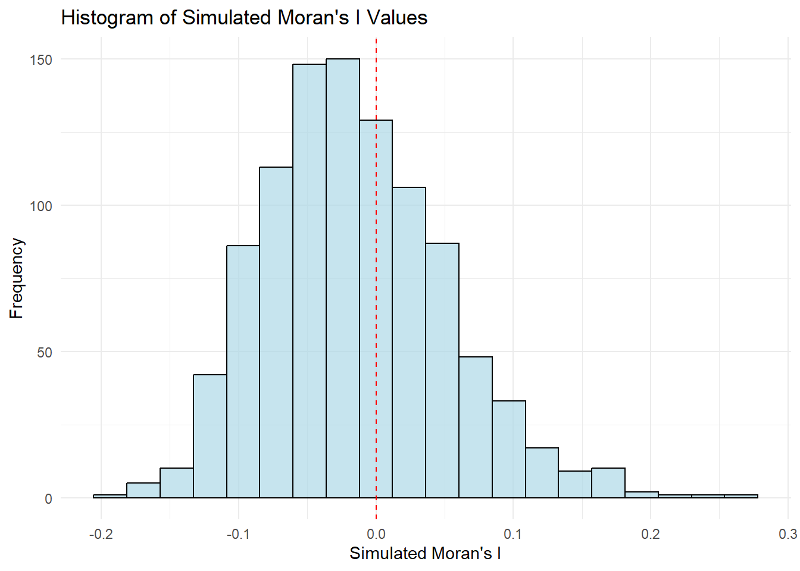

pacman::p_load(sf, spdep, tmap, tidyverse)Hands-on_ex05
If development are evenly distributed geographically? No -> is there sign of spatial clustering? Yes -> where are these clusters?
hunan <- st_read(dsn = "C:/ngmengye/ISSS626-GAA/Hands-on_exercise/Hands-on_ex05/data/geospatial",
layer = "Hunan")Reading layer `Hunan' from data source
`C:\ngmengye\ISSS626-GAA\Hands-on_exercise\Hands-on_ex05\data\geospatial'
using driver `ESRI Shapefile'
Simple feature collection with 88 features and 7 fields
Geometry type: POLYGON
Dimension: XY
Bounding box: xmin: 108.7831 ymin: 24.6342 xmax: 114.2544 ymax: 30.12812
Geodetic CRS: WGS 84hunan2012 <- read_csv("C:/ngmengye/ISSS626-GAA/Hands-on_exercise/Hands-on_ex04/data/aspatial/Hunan_2012.csv")Rows: 88 Columns: 29
── Column specification ────────────────────────────────────────────────────────
Delimiter: ","
chr (2): County, City
dbl (27): avg_wage, deposite, FAI, Gov_Rev, Gov_Exp, GDP, GDPPC, GIO, Loan, ...
ℹ Use `spec()` to retrieve the full column specification for this data.
ℹ Specify the column types or set `show_col_types = FALSE` to quiet this message.hunan <- left_join(hunan,hunan2012) %>%
select(1:4, 7, 15)Joining with `by = join_by(County)`equal interval = equal range of values quantile = equal number of observations
equal <- tm_shape(hunan) +
tm_fill("GDPPC",
n = 5,
style = "equal") +
tm_borders(alpha = 0.5) +
tm_layout(main.title = "Equal interval classification")
quantile <- tm_shape(hunan) +
tm_fill("GDPPC",
n = 5,
style = "quantile") +
tm_borders(alpha = 0.5) +
tm_layout(main.title = "Equal quantile classification")
tmap_arrange(equal,
quantile,
asp=1,
ncol=2)
wm_q <- poly2nb(hunan,
queen=TRUE)
summary(wm_q)Neighbour list object:
Number of regions: 88
Number of nonzero links: 448
Percentage nonzero weights: 5.785124
Average number of links: 5.090909
Link number distribution:
1 2 3 4 5 6 7 8 9 11
2 2 12 16 24 14 11 4 2 1
2 least connected regions:
30 65 with 1 link
1 most connected region:
85 with 11 linkss0: sum of all weights in the spatial weights matrix s1: sum of squared weights for each region’s links. rows sums s2: sum of squared weights of all the elements in the weights matrix
rswm_q <- nb2listw(wm_q,
style="W",
zero.policy = TRUE)
rswm_qCharacteristics of weights list object:
Neighbour list object:
Number of regions: 88
Number of nonzero links: 448
Percentage nonzero weights: 5.785124
Average number of links: 5.090909
Weights style: W
Weights constants summary:
n nn S0 S1 S2
W 88 7744 88 37.86334 365.9147##Moran’s I
moran.test(hunan$GDPPC,
listw=rswm_q,
zero.policy = TRUE,
na.action=na.omit)
Moran I test under randomisation
data: hunan$GDPPC
weights: rswm_q
Moran I statistic standard deviate = 4.7351, p-value = 1.095e-06
alternative hypothesis: greater
sample estimates:
Moran I statistic Expectation Variance
0.300749970 -0.011494253 0.004348351 Null Hypothesis (H0): The GDPPC values are evenly distributed geographically, with no spatial autocorrelation (random pattern). Alternative Hypothesis (H1): The GDPPC values are not evenly distributed geographically, indicating positive spatial autocorrelation (clusters of similar values).
p-value < 0.05, we reject null hypothesis (H0).
Standard deviate (Z value) = 4.7351, positive: clustered, observations tend to be similar
set.seed(1234)
bperm= moran.mc(hunan$GDPPC,
listw=rswm_q,
nsim=999,
zero.policy = TRUE,
na.action=na.omit)
bperm
Monte-Carlo simulation of Moran I
data: hunan$GDPPC
weights: rswm_q
number of simulations + 1: 1000
statistic = 0.30075, observed rank = 1000, p-value = 0.001
alternative hypothesis: greaterThe Monte Carlo simulation you ran provides a way to assess the significance of the observed Moran’s I value.
We reject the null hypothesis and conclude that there is significant positive spatial autocorrelation in the GDPPC values across the regions in the hunan dataset.
##Visualize Monte Carlo Moran’s I
res = expected value under random spatial distribution, close to orginal expectation -0.011494253
The observed Moran’s I statistic (0.300749970) being significantly different from the expected value under randomness (-0.01504572) indicates that there is spatial autocorrelation in your data.
Why Calculate This Mean? Calculating the mean of the simulated Moran’s I values helps to understand the distribution of Moran’s I under the null hypothesis of spatial randomness. It gives you an idea of what the Moran’s I would typically be if there were no spatial autocorrelation present in the data.
mean(bperm$res[1:999])[1] -0.01504572var(bperm$res[1:999])[1] 0.004371574var(bperm$res[1:999])[1] 0.004371574summary(bperm$res[1:999]) Min. 1st Qu. Median Mean 3rd Qu. Max.
-0.18339 -0.06168 -0.02125 -0.01505 0.02611 0.27593 hist(bperm$res,
freq=TRUE,
breaks=20,
xlab="Simulated Moran's I")
abline(v=0,
col="red") 
library(ggplot2)
# Convert the simulated Moran's I values to a data frame
moran_res_df <- data.frame(simulated_moran = bperm$res[1:999]) # Use only the simulated values
# Create the histogram with ggplot
ggplot(moran_res_df, aes(x = simulated_moran)) +
geom_histogram(bins = 20, fill = "lightblue", color = "black", alpha = 0.7) + # Histogram with 20 bins
geom_vline(xintercept = 0, color = "red", linetype = "dashed") + # Add vertical line at 0
labs(
x = "Simulated Moran's I",
y = "Frequency",
title = "Histogram of Simulated Moran's I Values"
) +
theme_minimal() # Use a minimal theme for a clean look